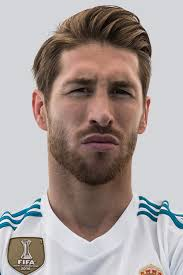

| Серхио Рамос | ||
| Рекордсмен по количеству сыгранных матчей за клуб (650) |  | Рекордсмен по количеству голов, забитых защитником в Ла Лиге (71) |
| Больше информации об игроке | ||
| Лука Модрич | ||
| Рекордсмен по количеству трофеев в Реале (28) | Самый возрастной игрок Реала (39 лет) | |
| Больше информации об игроке | ||
| Криштиану Роналду | ||
| Лучший бомбардир в истории клуба (450 голов в 438 матчах) | Лучший ассистент в чемпионате Испании (85 голевых передач) | |
| Больше информации об игроке | ||